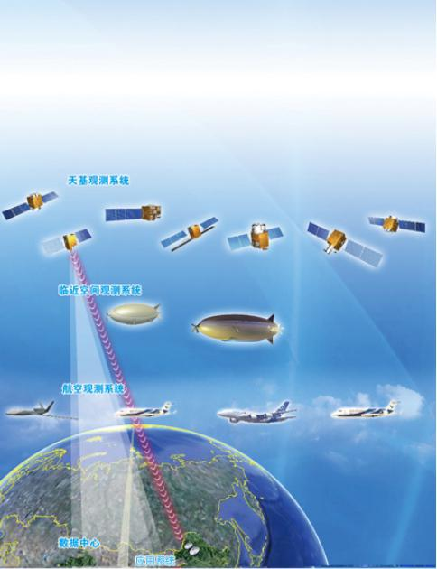
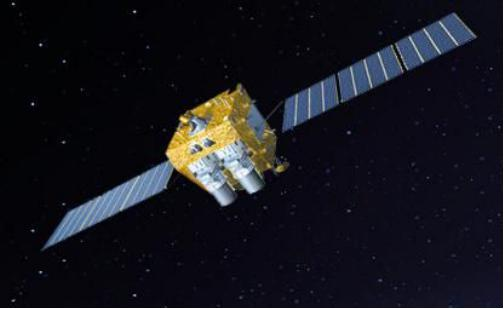
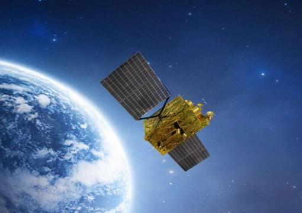
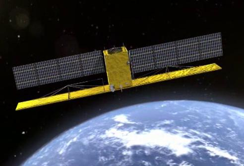
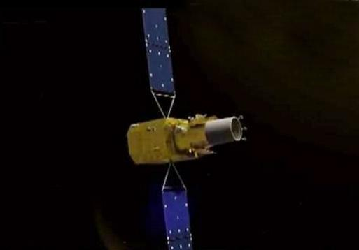

高分辨率对地观测系统重大专项是《中国中长期科学和技术发展规划纲要(2006-2020)》部署的一个国家重大科技专项，由国家航天局对地观测与数据中心负责具体组织实施。高分专项将建设基于卫星、平流层飞艇和飞机的高分辨率对地观测数据获取系统，完善相应地面系统，建立数据与应用中心。该系统将与其他观测手段相结合，形成全天候、全天时、全球覆盖的对地观测能力，到2020年，建成先进的陆地、大气、海洋对地观测系统，为现代农业、减灾、资源环境、公共安全等重大领域提供服务和决策支持。
（一）高分一号卫星
高分一号卫星由长征二号丁运载火箭于2013年4月26日发射。卫星载荷为两台分辨率为2米全色/8米多光谱的高分辨率相机和4台分辨率为16米的多光谱中分辨率宽幅相机，可以提供2米分辨率全色数据/8米分辨率多光谱数据与16米分辨率多光谱数据。主要用户部门为国土资源部、农业部、环境保护部。于2013年12月30日投入使用。
高分一号突破了高空间分辨率、多光谱与高时间分辨率结合的光学遥感技术，多载荷图像拼接融合技术，高精度高稳定度姿态控制技术，5年至8年寿命高可靠卫星技术，高分辨率数据处理与应用等关键技术。实现我国高分辨率遥感数据的国产化，在国土资源调查与动态监测、环境与灾害监测、精准农业信息服务等方面发挥重要作用。
（二）高分二号
高分二号卫星由长征四号乙运载火箭于2014年8月19日发射，并于2015年3月6日投入使用。卫星载荷为两台高分辨率1米全色、4米多光谱相机，可提供1米分辨率全色数据和4米分辨率多光谱数据。主要用户部门为国土资源部、住房和城乡建设部、交通运输部、林业局，同时还将为其他用户部门和有关区域提供示范应用服务。
高分二号卫星实现了亚米级空间分辨率、多光谱综合光学遥感数据获取，攻克长焦距、大F数、轻型相机及卫星系统设计难题，突破高精度高稳定度姿态机动、高精度图像定位，提升了低轨道遥感卫星长寿命高可靠性能，推动了我国卫星工程水平提升。与在轨运行的高分一号卫星相互配合，进一步完善我国高分专项建设，推动高分辨率卫星数据应用，为土地利用动态监测、矿产资源调查、城乡规划监测评价、交通路网规划、森林资源调查、荒漠化监测等行业和首都圈等区域应用提供服务支撑。
（三）高分三号
高分三号由长征四号丙运载火箭于2016年8月10日在太原卫星发射中心发射。
高分三号卫星是我国首颗分辨率达到1米的C频段多极化合成孔径雷达(SAR)卫星。高分三号卫星具备12种成像模式，涵盖传统的条带成像模式和扫描成像模式，以及面向海洋应用的波成像模式和全球观测成像模式，是世界上成像模式最多的合成孔径雷达卫星。卫星成像幅宽大，与高空间分辨率优势相结合，既能实现大范围普查，也能详查特定区域，可满足不同用户对不同目标成像的需求。此外，高分三号卫星还是我国首颗设计使用寿命8年的低轨遥感卫星，能为用户提供长时间稳定的数据支撑服务，大幅提升卫星系统效能。为海洋环境监测与权益维护、灾害监测与评估气象研究、水利设施监测与水资源评价管理等应用领域发挥重要作用。
（四）高分四号
高分四号卫星由长征三号乙运载火箭于2015年12月29日发射。卫星载荷为一台可见光50m/中波红外400m分辨率的面阵相机。主要用户部门为民政部、中国地震局、国家林业局、中国气象局。
高分四号卫星可提供50米全色、50米多光谱、400米中波红外数据。配置有目前我国口径最大的面阵凝视相机、首次研制的大面阵红外探测器，攻克了高轨遥感卫星总体设计、姿态快速机动与高稳定控制、长寿命高可靠、复杂条件下成像质量保障等一系列关键技术，大幅提高了我国遥感卫星的整体设计、研制水平。
高分四号卫星利用长期驻留固定区域上空的优势，能够高时效地获取地球同步轨道50米分辨率可见光、400米分辨率中波红外遥感数据，重点针对国内用户对高时间分辨率遥感图像数据的要求，为综合防灾减灾、地质灾害调查、林业灾害监测、气象预警预报等应用领域提供遥感数据。